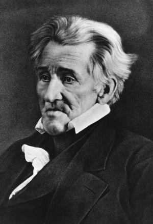
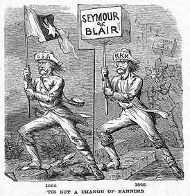

|
The Democratic Party is the nation's oldest existing
political party. Officially founded as the
"Democratic-Republican" Party by Thomas Jefferson and James
Madison in 1800, it played a critical role in the political
and economic history of the nineteenth century United
States. Immigrants, the urban working class, subsistence
farmers, and southern plantation owners formed the core
groups that supported the Democrats in the Civil War and
Reconstruction era.
Philosophy
Democrats generally believed in a narrow construction of
the U.S. Constitution, limited powers for the federal
government, and economic policies that led to expansion and
settlement of the nation's vast territories for the benefit
of ordinary white people. Democrats controlled the political
system in the country from 1828 through 1856 by winning 6 of
the 8 presidential elections, and dominated Congress for
much of the 1840s and 1850s. The Party's power and prestige
greatly diminished when it split into northern and southern
wings over the slavery issue in 1860. From 1860 to 1928 the
Democrats controlled the White House only 4 out of 18 times.
The modern Democratic Party emerged from the presidential
election of 1828 under the leadership of President Andrew
Jackson of Tennessee and Martin Van Buren of New York. Van
Buren, a talented and dedicated professional politician,
forged a national network of strong ties between Democratic
political leaders that stressed commonalities between the
humble farmers and working class of the north and the
yeomanry and cotton growers of the south. They were
adamantly opposed to the new Whig Party's strongly pro
manufacturing economic plan and especially to a national
banking system. A central bank, Jackson and other Democrats
asserted, represented a dangerous and unprecedented
concentration of power that threatened state's rights and
the vision of a "small" democracy articulated by Jefferson.
|

Andrew Jackson, founder of the modern
Democratic Party.
|
Jackson, an ardent supporter of the political philosophy
of Thomas Jefferson, was, like Jefferson, a southern
slaveholder. Despite their undeniable appeal to northerners
and southerners of more modest means, Democrats soon became
identified with a pro-slavery agenda. In 1828, the Congress
decided to increase tariff rates. Outraged wealthy Southern
plantation owners attacked the "Tariff of Abominations".
South Carolina's John C. Calhoun, then serving as
Vice-President, published a series of anonymous letters
criticizing the tariff.
When an even higher tariff was adopted in 1832, Calhoun
resigned his office and re-entered the senate, where he
could openly express his opposition. Calhoun argued that
South Carolina should "nullify" the tariff, in essence
declaring it void in their state. The conflict was
ultimately resolved with a compromise tariff, but
nullification became an important argument used by the South
to derail proposed action against slavery, and a disturbing
reminder that Democrats were divided by regional interests.
Throughout the 1840s and 1850s, the identification of the
Democratic Party with southern slavery became even stronger.
Democrats worked for the successful annexation of Texas and
the unsuccessful annexation of Cuba as slave states. Led by
President James Polk, a Tennessee Jacksonian, Democrats
supported the Mexican War, and refused to ban slavery in the
territory acquired as a result of the war. Democrats
insisted on the inclusion of a stricter Fugitive Slave Act
in the Compromise of 1850.
Slavery was responsible for the death of the Democrats'
major opposition party, the Whigs, as well as the birth of
its new opposition, the Republican Party. Slavery was also a
deeply divisive issue among Democrats themselves, especially
after the Mexican War. Senator Stephen Douglas of Illinois
tried very hard to satisfy both wings, and ended up
destroying the Party that he loved. Douglas was the driving
force behind the Kansas-Nebraska Act of 1854, which
abolished the traditional slave versus free line between
north and south and opened up the territories to slavery.
Democratic president James Buchanan's administration created
a firestorm of protest with his overtly pro-southern
policies in Kansas and elsewhere from 1856 to 1860.
The Election of 1860
In the Election of 1860, the Democratic Party finally
split between pro-slavery secessionists and more moderate
Unionists. At the Democratic convention in Charleston,
South Carolina, the party failed to nominate a candidate due
to disruptions by secessionist southern delegates. Northern
and Southern Democrats then met separately several weeks
later, with Northern Democrats choosing Stephen A. Douglas
as their presidential candidate, while Southern Democrats
nominated John C. Breckenridge to carry their banner. This
split effectively guaranteed victory for Republican
candidate Abraham Lincoln. With Lincoln's victory, South
Carolina seceded from the United States on December 20,
1860, and by February 1, 1861, was followed by seven
additional states. Delegates from these states met soon
after at Montgomery, Alabama, to draft the Constitution of
the Confederate States of America and elect as president,
former U.S. Senator Jefferson Davis.
During the Civil War, Confederate politics and government
led to the development of a single party system, made up of
former Democrats and Whigs that was highly disorganized and
ineffective. In the North, Democrats became the opposition
party. The Party divided into two wings, "War Democrats,"
and "Peace Democrats." The War Democrats were the majority
for most of the years between 1861 and 1865. They supported
Lincoln and the war, and were careful not to bring the
dreaded name of "traitor" down upon their organization.
Antiwar Sentiment
As the war went on, however, more and more Democrats
criticized what they thought to be the Lincoln

Clement Vallandigham, the most prominent
antiwar Democrat.
|
administration's unconstitutional abuse of power in the
prosecution of the conflict. Two issues particularly were
successful in mobilizing Democratic voters against
Republicans during the war: Lincoln's unpopular suspension
of habeas corpus and his emancipation of Southern slaves.
Although the Republicans kept a majority in the Congress,
there were significant Democratic gains in the House and
Senate in the elections of 1862.
Some Democrats went so far as to argue that the war
should be brought to an end, even if that meant accepting
secession. These Peace Democrats, or "Copperheads", felt
the war victimized working-class and immigrant families.
They also feared that freedmen would compete with white
laborers for the same jobs. By 1864, the Copperheads were a
powerful faction in the Democratic Party, and they were able
to insist that a peace plank be included in the party's
platform for the presidential elections in that year.
Renewed Union successes on the battlefield caused Democratic
nominee George B. McClellan to repudiate the plank, and
thereafter the Copperheads waned in importance.
The Democrats and Reconstruction
After the war, the Democratic Party remained in the
minority, and indeed reached the lowest point in their
history. Republicans regularly, and successfully, attacked
Democrats as acting disloyal during the war. "Not every
Democrat was a traitor," crowed Republicans, "But every
traitor was a Democrat." During the first year of
Reconstruction, a bitter dispute developed between Democrats
and Republicans over the extension of citizenship and the
franchise to African-Americans. Encouraged by President
Andrew Johnson, many Democrats opposed what they called the
"Africanization" of the South.
Democrats continued to attack Republican-led
Reconstruction. In the years immediately after the Civil
War, Democratic southern state legislatures passed a series
of restrictive racial laws known as the "black codes." The
primary purpose of the codes was to keep African-Americans
subordinate by controlling freedmen and keeping them in a
state close to slavery. Northern Republicans, particularly a
militant faction of the party known as the Radical
Republicans, were outraged.
Congressional Radicals were able to impose an especially
harsh Reconstruction on the South that effectively kept
Southern Democrats out of positions of power. Barred from
participating in the political system through legal means, a
|

This cartoon shows a Souther soldier carrying a Confederate
flag in 1864, and a Southern voter in 1868 carrying a flag bearing the names of
Democrats Horatio Seymour and Francis P. Blair, Jr. and wearing a Ku Klux Klan
hat. The caption reads, "'Tis but a change of banners."
|
great number of Southern Democrats worked to reestablish a
system of white supremacy through illegal means, namely
terrorism. The Ku Klux Klan and other groups kept
African-Americans from voting by harassing and even killing
those individuals who presumed to exercise their civil
rights.
As the decade of the 1860s closed, support for
Congressional Reconstruction was waning. Ulysses S. Grant
won the election of 1868 handily, and overcame a serious
challenge from anti-Reconstruction Democrats and Republicans
to win a second term in 1872. Increasingly, the Democratic
cry that Republicans had denied votes to competent white
southern voters while enabling "unfit" African Americans to
vote resonated with northerners. Perhaps the biggest boost
for the Democrats, however, was the depression of 1873.
Dissatisfied with the Republican handling of the economy,
voters returned Democratic majorities to Congress in 1874.
Two years later, a disputed election between Democrat Samuel
J. Tilden and Republican Rutherford B. Hayes led to a series
of compromises that awarded Hayes the presidency while
bringing an end to Reconstruction.
The election of 1876 solidified a status quo that
remained in place for the remainder of the 19th century. The
Republicans controlled the majority of Northern voters, and
had a virtual monopoly on the presidency. Every president
elected between 1860 and 1912, with the exception of Grover
Cleveland, was a Republican. The Democrats, meanwhile,
dominated the "Solid South," and were powerful in a number
of Northern localities, particularly New York City.
African-Americans, most of them still living in the South,
were largely denied a voice in politics. It would take
another depression, in 1932, to begin the historic
transformation of the Democratic Party from its 19th century
origins as a pro slavery and states rights political
organization to its current liberal incarnation.
Source: Joan Waugh, ed. Facts on File Encyclopedia of American
History: Civil War and Reconstruction, 1856 to 1869 (New York: Facts on
File, 2003), 93-95.
|